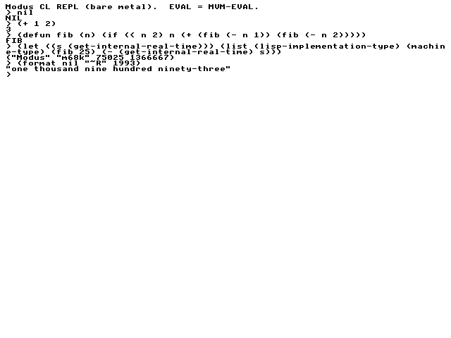
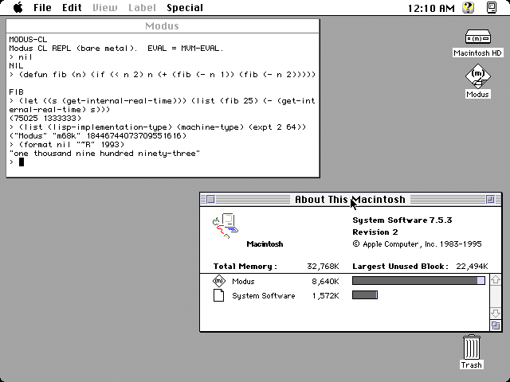
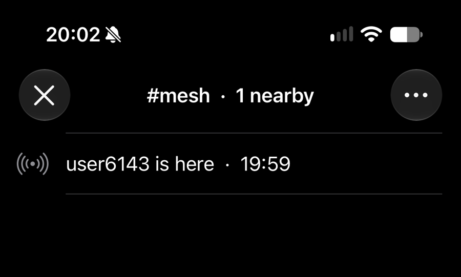
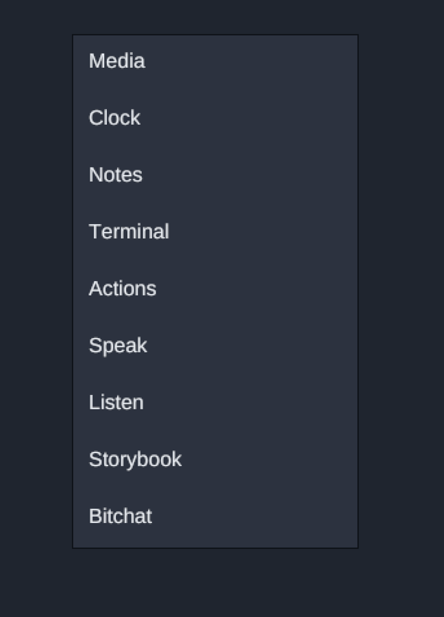

Last week Modus reached a prompt on an emulated Mac Classic. This week it booted an emulated Quadra 950 from its own hard-disk driver with no Mac OS at all, and ran as an ordinary application under System 7.5.3, in a partition it squeezed from 16.5 MB to 6 in two days. On the PC side, a disk with no DOS on it now boots Modus on twelve emulated motherboards, from a 386DX-33 to a Celeron, each under its own period BIOS. The author summed up the state of things on Friday: all modus-lisp repos are said to work on modus now. drivers are still almost non-existent.
The Mac work from the branches of № 36 merged into main, and moved up a decade of hardware, to MAME’s Quadra 950, a 68040. It runs two ways. With no Mac OS, the Quadra’s ROM loads Modus’s SCSI driver and boot blocks from the hard disk, and the REPL comes up on the bare screen. Under System 7.5.3, Modus is an application, and About This Macintosh tells you what it costs.


That 8,640K is the end of a descent the log records step by step. The first Quadra map needed a 16,576 KB partition. It fell to 15,040 when the map moved down over the boot code’s dead tail. It fell to 13,568 when the JIT took its code area from the partition, 10,112 when cold native code stayed on disk until its first call, 9,728 when the stack moved over the boot tail, and 8,640 with a keep-list measured on the Mac itself, which is the screenshot above. Then it went on: 7,424 once boot-only code stayed on the disk, and 6,016 with smaller semispaces.
The floppy got the same treatment. Rewriting its LZMA loader in 914 bytes of 68020 assembly cut unpacking from about eleven minutes to 42 seconds. Booting a saved core instead of rebuilding the same tables each time brought the REPL to about 105 seconds on a 68040, from 400. A profile on the emulated Quadra had found those four minutes spent rebuilding symbol tables that never change. A second floppy now carries the cold code, formatted FAT12 by fs-fat, and leaves 646 KB free for the user.
The PC went the way the Mac did, one layer at a time. On the 18th came
MODUS.COM, a DOS program that loads Modus into extended memory through unreal
mode and starts it exactly as QEMU’s -kernel would, so one image boots
both ways. It refuses, with a message, a CPU below a 386, a machine running EMM386, or an A20
line that will not open. On the 19th, an 86Box harness began booting FreeDOS on emulated
boards under their own BIOSes. Getting through their setup screens was a project of its own:
a 1993 AMI on an ALi chipset counts its memory differently at POST than in its own setup, and
stopped on every boot until the harness learned to reconcile the two.
MODUS.COM is unchanged: its CPU and FPU checks, memory sizing, A20, unreal-mode load and multiboot entry all run as they do under DOS; the image never knew DOS was there.
modus — dc1c6753, 20 NovemberThen, on the 20th, DOS went. A boot sector and a 1.3 KB shim serve the seven DOS calls
MODUS.COM makes, from a file table on the disk. Under QEMU the REPL is on the VGA
screen four seconds from power-on. In 86Box all twelve boards pass: two 386DX-33s and two
486SX-25s on soft floats, four 486DX2-66 boards from AMI, Phoenix, ALi and Intel, two Pentiums,
a Pentium Pro and a Celeron. The same day, bare i386 learned to run in 6 MB, by leaving its compiled
code on the disk and paging it in through the BIOS on first use.
chirp is a client for bitchat, the Bluetooth mesh chat, in Common Lisp. It reads and writes the packet format byte for byte, checks every signed announce and message against the key the sender first announced, relays with TTL and dedup, and reassembles fragments. The radio is left to whatever hosts it. On the phone it talks to the App Store app. The author, on how it began: “hey let’s prototype a bitchat client in the existing (ios) modus app” and ten minutes later claude’s like “verified it talks over bluetooth to the app store app. do you want me to publish the new repo?”

#mesh channel, announcing a new peer: chirp, under a generated name.
screenshot by the author, 17 November 2026
fs-apple reads and writes Apple’s disk formats in place: the partition map and its driver descriptor, and PackBits. It was written to run anywhere Common Lisp does, including on a Macintosh, where no 32-bit field can be assumed to fit a fixnum. It exists because the Mac work needed it, and Modus’s boot disks are now laid out by it rather than by a Python script.
glass’s window manager got a rack, a tiling layout for a phone, plus a theater mode that gives one film, picture or document a turned screen, and drawing at the screen’s real pixel density. glass-webrtc can now send the desktop as VP8 video instead of RFB updates, and the viewer switches between the sharp and the fuzzy stream live, per session, by what the link can carry. spool’s radio gives each station a worker that shares nothing with the others. illatio runs small 4-bit models on Metal, and has begun a port of Inkling 2 Mini from its documentation. operandi now evaluates small models running inside its own image.
One gate was red: kiln’s image, since the 20th. The image built, and then failed its
last check, that every repository in it sits at the commit repos.lock names.
For operandi-gui, it did not appear to. The lock had begun naming a branch other than the
default for the first time, operandi-on-ios. kiln’s cloner checked out the
right files and pointed that branch at the pinned commit, but left HEAD on the
default branch, so git reported master’s older tip. The files were never wrong; the
repository was misreporting which commit they were. The cloner now points HEAD
at the locked branch, and the image passes.
The audit also found four lists of siblings that were stale and still green: glass has grown subsystems that reach glass-webrtc and folio, and the gates of glass, loom, spool and warren never loaded them. Those lists are complete again, and the fixes, dated the 21st, belong to next week’s ledger.
As of publication: 67 repositories, 43 green, none failing, 24 without a workflow.